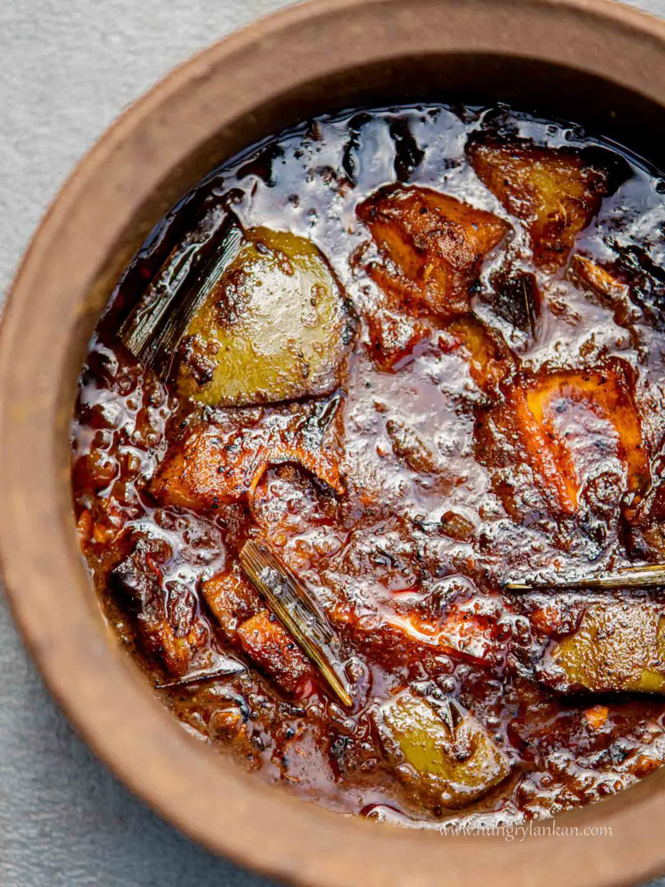
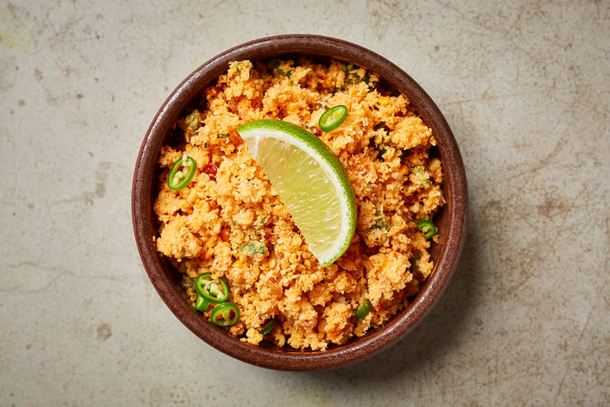
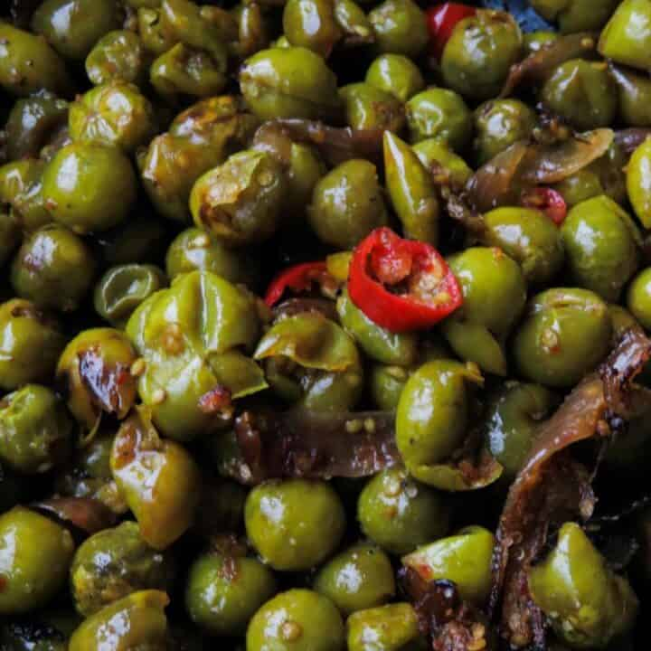

1st May, 2023
Sri Lankan Mango Curry
You absolutely must try this incredible sweet, tangy, and spicy mango curry that has the power to take any rice dish to a whole new level.
Cooking green mangoes results in their transformation into tender, jam-like perfection. It's an experience you won't want to miss!
Ingredients
- 1 tsp mustard seed
- 1-2 tsp of chilli powder
- 1 tsp turmeric powder
- 1 tsp curry powder
- 1 onion chopped
- 1-2 green chilli chopped
- 2" piece of cinnamon
- 2 cloves garlic chopped
- 1/2" piece ginger chopped
- 3 cardamoms, crushed
- 2 cloves crushed
- 1 tbsp sugar
- 1/2 cup of coconut milk
- 2 tbsp cooking oil
- salt, pepper to taste
- Curry leaves
Method
L3 Green Mangoes (I prefer ones that slightly ripe)
Heat a medium-size pan over medium heat.
Fry the mustard seeds in oil.
Cover and let the seeds pop.
Next, reduce the heat and add turmeric, chili powder, and curry powder. Fry for about 20 seconds.
Next, add the onion, green chilies, ginger, garlic, and curry leaves. Fry until fragrant.
Finally, add all the ingredients except the coconut milk.
Cook covered for about 20-30 minutes over low heat.
Add the coconut milk and cook for another 3 minutes.
Serve warm with rice.

1st May, 2023
Sri Lankan Pol Sambol
Prepare this incredibly easy Sri Lankan coconut sambal recipe in just 10 minutes using minimal ingredients.
It pairs perfectly with any meal.
Ingredients
- 100g of coconut, grated
- 1 red onion, diced
- 2 tsp chilli flakes
- 1 garlic, diced
- 1 tsp paprika
- 1/2 green chilli, finely sliced
- lime juice, to taste, plus a lime wedge to garnish
- salt, to taste
Method
Pound the onion, tomato, chilli flakes, paprika and half of the green chilli together in
a pestle and mortar until they all combine to create a fine paste. Fold in the shredded coconut, then season with salt and lime juice to taste.
Garnish with the remaining finely sliced green chilli and a lime wedge.

1st May, 2023
Sri Lankan Tempered Tibbatu(turkey berry, wild eggplant)
Sri Lankan Thibbatu Stir Fry, known as 'Thibbatu Thel Dala' in Sri Lanka, is a quick and straightforward dish that doesn't demand much time to prepare.
Ingredients: (3-4 servings)
- 200g Thibbatu
- Handful of dried sprats or Maldive fish (Omit this if you look for a vegetarian dish)
- 1 medium size onion sliced finely
Method
Clean the Thibbatu as mentioned above. Wash thoroughly. Add turmeric powder. Keep aside till other steps are done.
Wash dry sprats and keep aside to drain water.
Heat a pan over medium heat. Add cooking oil. When the oil is hot,add mustard seeds.
When the mustard seeds start splutter, add chopped garlic.
Then add curry leaves and dried sprats. Let it cook until the sprats change its colour.
At this time add onions and fry.
When onions become tender and start emitting aroma, add thibbatu and mix well. Add the piece of rampe too.
Add little bit of turmeric powder as necessary. Then add red chili flakes.
Mix well.
Add salt as per taste and mix well till everything combine well.
When the thibbatu is done and change its colour, remove from the heat.
Thibbatu stir fry is ready to serve with plain rice.
Enjoy!